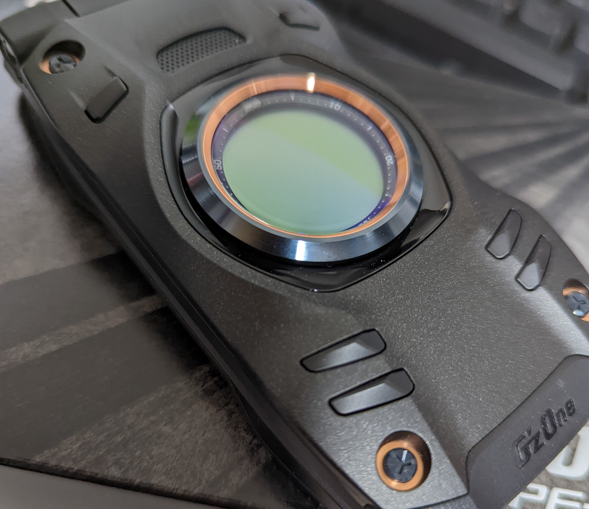

携帯電話を新調したのは、INFOBAR XV以来で、その前に使っていたのはSH-07Fだだった。
G'zOne TYPE-XXは筐体のデザインも恰好が良く、その名前もさることながら耐久性にも優れており、INFOBAR XV同様にAndroidOSベースの為、Android向けのソフトウェアをAPKファイル実行やadb コマンドを用いてインストールする事ができるので全てがソフトが完璧に動くわけではないにしても、AndroidOS向けのアプリケーション資産が扱えるのは魅力と言えるだろう。
そして、猫も杓子もタッチパネルなこの時代でありますが、僕はこの物理ボタンで完結する操作体形を心の底から愛している。
もちろん、今までにタッチネル型の携帯電話も買ったりしたが、それは携帯電話としてではなくあくまでも情報端末としてであったし、結果として僕には不要であったというのが結論だ。
携帯電話なんてものは、電話と電子メールが扱え、最低限のブラウジングができれば十分であるし、それは物理ボタンで完結するものが好ましい。
故に、僕はこの形状に拘りを持つ。
そもそも、外出頻度は低く、満を持してする外出は図書館や本屋、映画館やレンタルビデオショップ点、中古CDや古本目当てのリサイクルショップに後はエロ漫画と美少女ゲーム目当てに行くアダルトショップくらいでしかない、少し遠出しても秋葉原がいい所だ。そんな僕にとって、携帯電話なんて物の使用頻度なんてものはたかが知れている。
どうせかかって来る電話や送られてくる電子メールは基本「パソコンや携帯電話の相談」か「金を貸して欲しい」といった連絡でしかないし、携帯電話なんてものは社会による事実上の強要と一部の友人の為に持っているに過ぎない。
